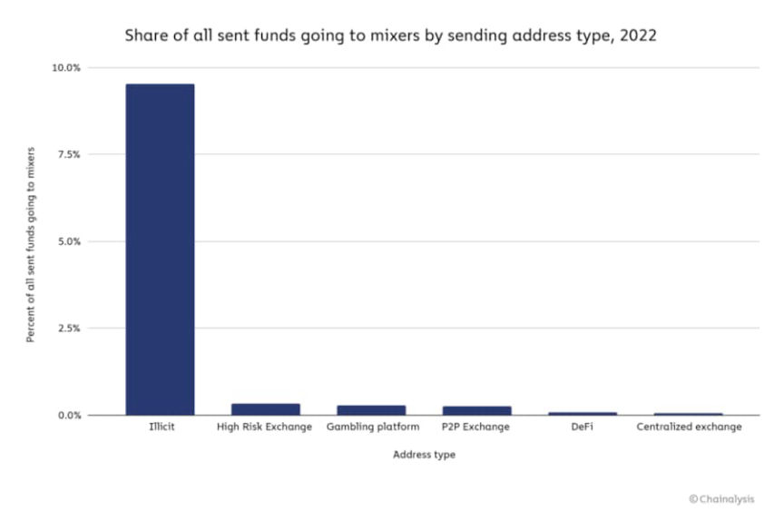
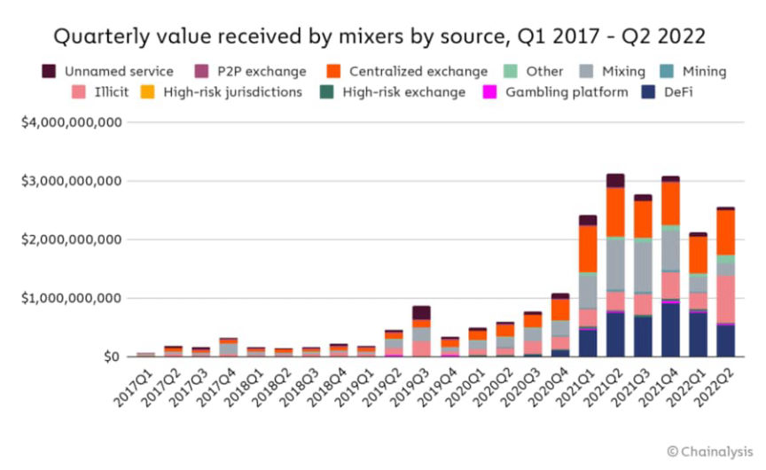
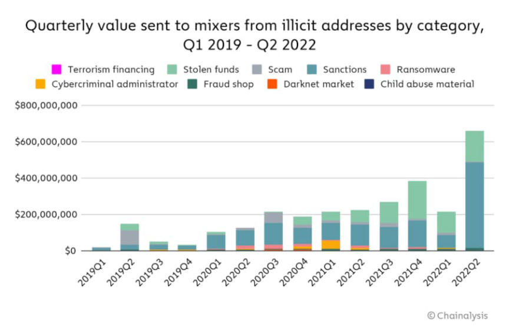
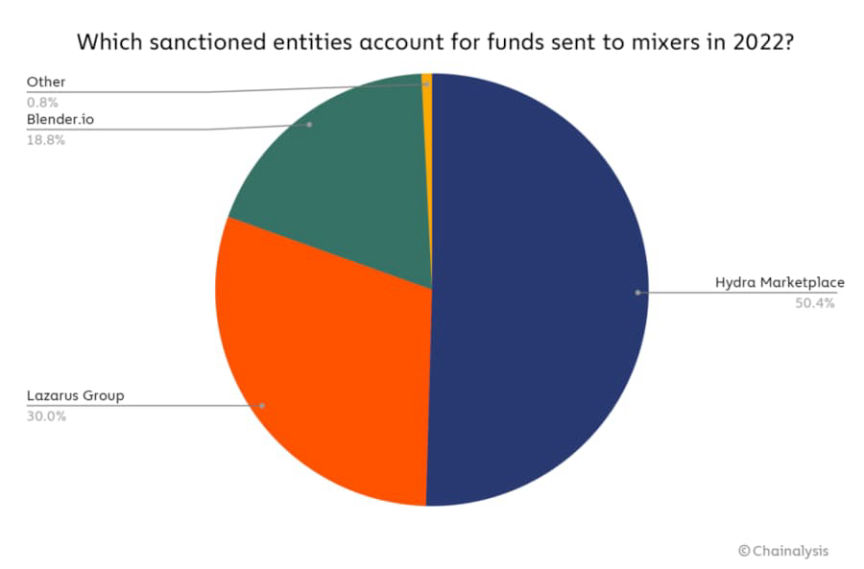
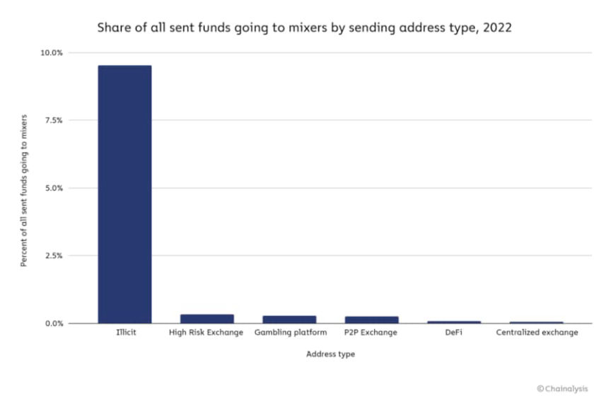
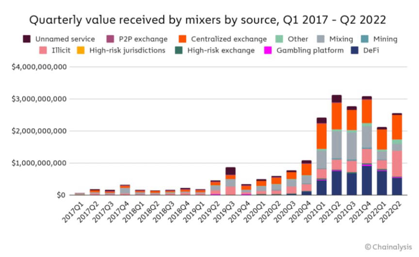
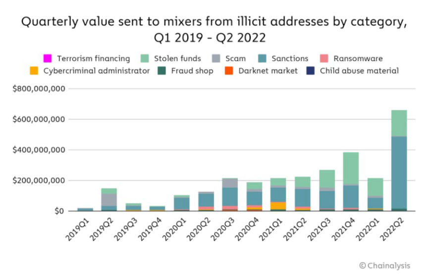
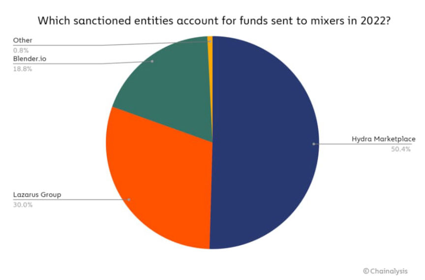

Chainalysis: Cryptocurrency Mixer Use at an All-Time High
~3 min read | Published on 2022-07-14, tagged Chainalysis using 513 words.
Cryptocurrency mixer use has reached an all-time high in 2022, according to a report from the blockchain analysis firm Chainalysis.

Chainalysis, a member of the World Economic Forum’s (WEF) Global Innovators community, is a leader in the blockchain analytics industry. The company is an extension of governments, providing services to law enforcement agencies and hiring former feds and FinCEN employees.
Mixers are receiving record amounts of cryptocurrency in 2022, according to a Chainalysis report published on July 14, 2022. On April 19, 2022, mixers received “an all-time high of $51.8 million worth of cryptocurrency.” A chart provided by Chainalysis reveals that mixers received roughly $24 million worth of cryptocurrency on the same day in 2021.

“Are Mixers Compliant?”
In the report, Chainalysis laments that mixers are legal “despite their utility for criminals.” FinCEN, the Financial Crimes Enforcement Network, clarified in 2020 that cryptocurrency mixers are considered money transmitters under the Bank Secrecy Act (BSA) and must comply with the same regulations as other money transmitters. These regulations include maintaining an anti-money laundering compliance program and following “Know Your Customer” (KYC) rules for Money Services Businesses (MSBs).
“Given that increased privacy is the whole point of using a mixer, it seems unlikely that one could implement those compliance procedures and retain its user base. “
Types of Transactions
So far, in 2022, 23% of funds sent to mixers came from a cryptocurrency address associated with illicit activity. Illicit transactions accounted for just 12% of mixer activity in 2021.
Chainalysis tracked several categories of illicit activity.
Terrorism financing Stolen Funds Scam Sanctions Ransomware Cybercriminal administrator Fraud shop Darknet market Child sex abuse material “What stands out most is the huge volume of funds moving to mixers from addresses associated with sanctioned entities, especially in Q2 2022.”
In April 2022 (Q2), the U.S. Treasury’s Office of Foreign Assets Control (OFAC) sanctioned Hydra Market. Transactions from addresses linked to Hydra Market accounted for 50.4% of all funds moving to mixers from sanctioned entities in 2022.

Lazarus Group is a hacking group purportedly connected to the Democratic People’s Republic of Korea (DPRK). In 2022, Lazarus Group hackers stole roughly $1 billion in cryptocurrency from DeFi projects. Funds sent from addresses associated with the Lazarus Group and Blender.io accounted for nearly all of the remaining transactions in the same category.

Blender.io is the first cryptocurrency mixer sanctioned by OFAC. OFAC sanctioned the mixer for allegedly processing $20.5 million in stolen cryptocurrency, some of which came from the Lazarus Group.“Balancing privacy with safety.”
Chainalysis, which is a neutral source when it comes to discussions about financial privacy, believes that mixers “present a difficult question” to “members of the cryptocurrency community.”
“Virtually everyone would acknowledge that financial privacy is valuable, and that in a vacuum, there’s no reason services like mixers shouldn’t be able to provide it. However, the data shows that mixers currently pose a significant money laundering risk…”
Mixer Usage Reaches All-time Highs in 2022 With Nation State Actors and Cybercriminals Contributing Significant Volume | archive.is, archive.org, chainalysis.com

Mixers may soon become obsolete as Chainalysis continues to refine the ability to demix certain mixing transactions and see users’ original source of funds.
Chainalysis, a member of the World Economic Forum’s (WEF) Global Innovators community, is a leader in the blockchain analytics industry. The company is an extension of governments, providing services to law enforcement agencies and hiring former feds and FinCEN employees.
Mixers are receiving record amounts of cryptocurrency in 2022, according to a Chainalysis report published on July 14, 2022. On April 19, 2022, mixers received “an all-time high of $51.8 million worth of cryptocurrency.” A chart provided by Chainalysis reveals that mixers received roughly $24 million worth of cryptocurrency on the same day in 2021.

“Are Mixers Compliant?”
In the report, Chainalysis laments that mixers are legal “despite their utility for criminals.” FinCEN, the Financial Crimes Enforcement Network, clarified in 2020 that cryptocurrency mixers are considered money transmitters under the Bank Secrecy Act (BSA) and must comply with the same regulations as other money transmitters. These regulations include maintaining an anti-money laundering compliance program and following “Know Your Customer” (KYC) rules for Money Services Businesses (MSBs).
“Given that increased privacy is the whole point of using a mixer, it seems unlikely that one could implement those compliance procedures and retain its user base. “
Types of Transactions
So far, in 2022, 23% of funds sent to mixers came from a cryptocurrency address associated with illicit activity. Illicit transactions accounted for just 12% of mixer activity in 2021.
Chainalysis tracked several categories of illicit activity.
In April 2022 (Q2), the U.S. Treasury’s Office of Foreign Assets Control (OFAC) sanctioned Hydra Market. Transactions from addresses linked to Hydra Market accounted for 50.4% of all funds moving to mixers from sanctioned entities in 2022.

Lazarus Group is a hacking group purportedly connected to the Democratic People’s Republic of Korea (DPRK). In 2022, Lazarus Group hackers stole roughly $1 billion in cryptocurrency from DeFi projects. Funds sent from addresses associated with the Lazarus Group and Blender.io accounted for nearly all of the remaining transactions in the same category.

Blender.io is the first cryptocurrency mixer sanctioned by OFAC. OFAC sanctioned the mixer for allegedly processing $20.5 million in stolen cryptocurrency, some of which came from the Lazarus Group.“Balancing privacy with safety.”
Chainalysis, which is a neutral source when it comes to discussions about financial privacy, believes that mixers “present a difficult question” to “members of the cryptocurrency community.”
“Virtually everyone would acknowledge that financial privacy is valuable, and that in a vacuum, there’s no reason services like mixers shouldn’t be able to provide it. However, the data shows that mixers currently pose a significant money laundering risk…”
Mixer Usage Reaches All-time Highs in 2022 With Nation State Actors and Cybercriminals Contributing Significant Volume | archive.is, archive.org, chainalysis.com